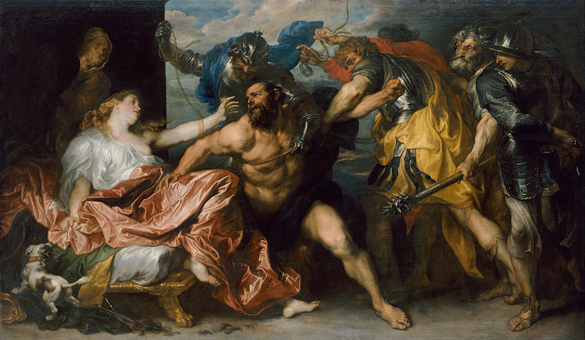

<head>
<meta charset="UTF-8" />
<meta name="keywords" content="drawing, painting" />
<meta name="description" content="drawings by Sunjy" />
<title>Sunjy</title>
<link rel="shortcut icon" type="image/x-icon" href="../../mImages/mCommon/favicon.ico" media="screen" />
<link rel="stylesheet" type="text/css" href="../../mCsses/mCommon/mCssA.css" />
<link rel="stylesheet" type="text/css" href="../../mCsses/mCommon/mCssB.css" />
<link rel="stylesheet" type="text/css" href="../../mCsses/mCommon/mCssC.css" />
<link rel="stylesheet" type="text/css" href="../../mCsses/mCommon/mCssD.css" />
<link rel="stylesheet" type="text/css" href="../../mCsses/mContent/mCssA.css" />
<link rel="stylesheet" type="text/css" href="../../mCsses/mContent/mCssB.css" />
<link rel="stylesheet" type="text/css" href="../../mCsses/mContent/mCssC.css" />
<link rel="stylesheet" type="text/css" href="../../mCsses/mContent/mCssD.css" />
</head>
<script type="text/javascript" src="../../mScripts/mContent/mContentAA.js" /></script>
<script type="text/javascript" src="../../mScripts/mContent/mContentAB.js" /></script>
<script type="text/javascript" src="../../mScripts/mContent/mContentAC.js" /></script>
<script type="text/javascript" src="../../mScripts/mContent/mContentAD.js" /></script>
<script type="text/javascript"></script> 
<script type="text/javascript">
document.write('<div class="mImgAbsolute"></div>');
/*
document.write('<p class="mFontSizeBColor" />From a white paper...</p>');
document.write('<table class="center"><tr><td>');
document.write('');
document.write('</td></tr></table>');
*/
</script>


<script type="text/javascript">
document.write('<p class="mFontSizeBColor" />Samson and Delilah</p>');
document.write('<p class="mFontSizeSColor" />“Samson and Delilah” by Anthony van Dyck depicts the scene after Delila has caused Samson to lose his extraordinary power.<br><br>Delila had discovered that Samson’s strength was derived by his long hair, which she cut off while he was sleeping. Without his long hair, his mortal enemy, the Philistines were able to capture him.<br><br>This painting was inspired by the episode from the Old Testament story of Samson and Delilah. Samson was a Hebrew hero of the ancient Israelites.<br><br>He had been granted immense strength to aid him against his enemies and which allow him to perform superhuman feats, including defeating an army of Philistines.<br><br>However, if Samson’s long hair were cut, then his vow would be violated, and he would lose his strength. Unfortunately, he fell in love with Delilah, who betrayed his trust.<br><br>Van Dyck was aware of a composition on the same subject by Peter Paul Rubens, his teacher, and role model.<br><br>Van Dyck, however, creates a different interpretation, he shows Delilah’s dismay at betraying her lover and her grief over her loss.<br><br>Delilah had been bribed by the Philistines to learn Samson’s secret of his great strength. However, she now seems to regret her treacherous act, or at least she is painfully moved by its dramatic consequence.<br></p>');
document.write('<table class="center" /><tr><td>');
document.write('<br>Delila had discovered that Samson’s strength was derived by his long hair, which she cut off while he was sleeping. Without his long hair, his mortal enemy, the Philistines were able to capture him.<br><br>This painting was inspired by the episode from the Old Testament story of Samson and Delilah. Samson was a Hebrew hero of the ancient Israelites.<br><br>He had been granted immense strength to aid him against his enemies and which allow him to perform superhuman feats, including defeating an army of Philistines.<br><br>However, if Samson’s long hair were cut, then his vow would be violated, and he would lose his strength. Unfortunately, he fell in love with Delilah, who betrayed his trust.<br><br>Van Dyck was aware of a composition on the same subject by Peter Paul Rubens, his teacher, and role model.<br><br>Van Dyck, however, creates a different interpretation, he shows Delilah’s dismay at betraying her lover and her grief over her loss.<br><br>Delilah had been bribed by the Philistines to learn Samson’s secret of his great strength. However, she now seems to regret her treacherous act, or at least she is painfully moved by its dramatic consequence.<br>" />');
document.write('</td></tr></table>');
</script>


